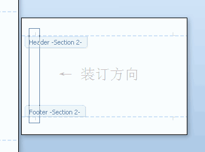

# 在横向页面上相同位置（相对纵向页面）设置页眉页脚
参见:https://www.lfhacks.com/tech/header-and-footer-in-landscape/
# 归纳:
进入页眉页脚编辑页面后，插入文本框，并将文本框移动到页面任意位置（当前我们需要移动到
相对纵向页面相同位置）。
Word 中直接在文本框中插入当前页码。
WPS 中不支持直接在
当前位置插入页码，需要在页眉页脚设置选项卡中的域中选择当前页码（同样也会根据章节不同变化）。
Word 文档里面，正式文档经常需要加页眉页脚，用来在每页显示相同的文档信息和页码。但是横向排版的页面内，页眉页脚的默认方向不便于打印。本文提供一种方法。
横向排版的页面内，页眉页脚的默认方向如下图：
从上图里看出，在纵向（Portrait）和横向（Landscape）的页面里，页眉和页脚的方向相同，在 Word 程序里看起来，都在页面的上部和下部。
但是，在更多的场合里，横向排版的页面仍然采取纵向的装订方式，需要配合与纵向相同的页眉页脚，word 这种默认的形式就不切合实际。应该采取下图的样式。

下面介绍怎么实现横向页面的页眉页脚。
首先，进入页眉页脚编辑模式。在工具栏里选择 "插入"-“页眉”。在出现的下拉预览菜单里，不要选择任何一种预置样式，而要选择下面的 "编辑页眉" 命令。如果选择了预置的样式，word 会给你按默认格式画出一条横向的页眉线。
这样就进入了页眉页脚编辑模式。在工具栏里选择 "插入"-“文本框”。
在想要添加页眉页脚的地方，插入文本框。注意，这两个文本框并没有加在正文里，仍然是在页眉页脚层内。

在文本框内加入所希望的文字，调整文字方向。这个文本框里可以加入和正常页脚一样的总页码和页码编号。
在文本框的样式设置里，去掉两个文本框的边框。为了添加页眉下面的横线，可以选中页眉文字的段落，设置段落的下边框为细实线，这样就实现了横向页面的页眉页脚。
最终实现的效果就是下图这样。
# 跨页的表格在顶端重复出现标题行
选中需要操作的表格的标题行（整行），在上方出现的
表格工具中激活标题行重复，如还未设置成功，则在表格属性的行选项卡中激活在各页顶端以标题行形式重复出现
# 手动目录的设置
参见:
# 表格后面多出大段空白或空白页面
参见:
# 正文当前页注释 (脚注)
参见:
# WPS 文档中分隔符显示方法
参见: